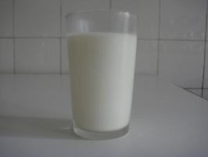
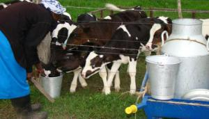
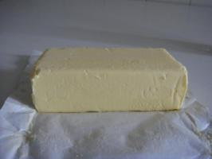
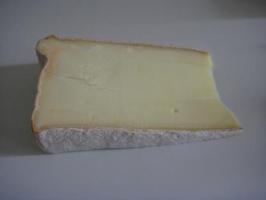

Milk and Dairy products
{kind=link}
Clean milk production
|  |
| Milk |
| (c) S. Fontana, BioVision
|
Milk is highly perishable, it easily contract diseases. It has a high protein content making it a suitable medium for bacteria growth. For these reasons clean milk production practices are inevitable. It is advisable that farmers observe the following areas in order to produce clean and quality milk for human consumption.
.
1. The Cow
Milk for human consumption should be from
- Cows in good health. That is the cow should be free from zoonotic diseases e.g. Brucellosis and Tuberculosis. Cows should be free from Mastitis
- Cows free from drugs. The farmer should always ensure the drug administered to the animal is out of it's system as per the manufacturer's instructions
- Feed the cow should be clean free from disease causing organisms. Cows should not be fed on feeds, pastures or weeds that may cause milk tainting (poor smell in milk) this may include feeds with Mexican Marigold, high levels of fish mills or poultry droppings
- Restrain to tie the animal, if necessary. Troublesome animals should have their tails tied.
2. Milk parlour
- The milk parlour (dairy) should be kept clean. If possible it should have a cement floor for easy cleaning. For large herds it is necessary to have a movable parlour to avoid bacterial and micro-organisms build up on the parlour location
- It should be cleaned after every milking
- Should be free from bad smell (odour)
- Provides clean water ad-lib for animals to drink
- If feeds are to be given during milking provide a feed trough
3. Milking Utensils
- Use aluminium or stainless steel utensils
- When washing, rinse the excess milk with cold water, then wash hot water plus detergents (soap). Scrub with a good washing material or brush. Rinse with cold water and place them on rack to dry. (The rack should be in on open place where direct sunlight can reach)
- Utensils store should be clean and well ventilated
|  |
| Using right utensils for hygienic milk handling |
| (c) J.O Ouda, KARI, Kenya
|
4. The Milker
- The milker should be healthy and clean. He/she should maintain short nails and hair (for ladies with long hair let them cover it when milking)
- Ensure the milker washers his hands with soap (detergents) and warm clean water before milking.
- Never smoke during milking time
- Milk quickly and completely without interruptions
5. Milking
- Clean the udder and wipe with a clean cloth before milking (advisable to have a cloth for each animal if not many).
- Check for mastitis with a strip cap.
- Milking should be done quickly and efficiently without interruptions in either the cow or milker. Strip all the milk from the udder of the animal to avoid mastitis.
- Do not pull the teats but squeeze them. After milking do not forget to apply milking jelly and dip the teats in iodine solution before releasing the animal
- Always milk the healthy animals first while those with mastitis and other disease later. (Do not mix clean milk with contaminated milk).
6. Milk handling
- Immediately after milking filter the milk through a clean muslin cloth and sieve. The two should be washed thoroughly and dried after every milking period. Move milk into a clean cold room for storage if not sold or transported immediately.
- Transport milk in the morning for household consumption should be boiled immediately and returned to the cold storage.
Milk value addition: butter, cheese, yoghurt
BUTTER
Butter is obtained by separation of the milk and subsequent churning of the cream. It contains a minimum of 80% butterfat. Butter can be made from fresh or sour cream. One litre of cream makes 300 to 400 g butter.
How to make butter
If the cream is fresh:
- Heat the milk/cream to 80 o to 90degC
- Cool it quickly, such as in running water, to 18degC
- Ripen by adding 50 ml (3 tablespoons) of sour butter milk or starter culture. Stir this into the milk or cream. Cover container and leave for 24 hours at 18degC
|  |
| Butter |
| (c) S. Fontana, BioVision
|
If you use milk or cream which is sour naturally, you do not require the ripening process.
Churning:
- Half fill a churn with sour milk or cream
- Churn with regular movement until the pieces of butter are as big as peas and the buttermilk looks watery. Do not let the pieces of butter become one large lump
- If there are no pieces of butter after 30 minutes, change the temperature by adding cold or warm water then churn again
- For cream do not add more than 25% water
- Churning may take 15 to 60 minutes - the time depends on the weather conditions, type of churn, fullness of the churn and fat content of the milk
- Carefully remove the pieces of butter from the lid and side with clean cold water. The water with butter will float on top of the butter milk
- Pour off the butter milk through a coarse sieve.
Washing:
- Wash the butter to remove butter milk. The more butter milk you remove the better the butter
- Half fill the churn with clean cold water. Churn for at least 10 minutes
- Use a skimmer to remove the pieces of butter floating on the water or wash the butter in a sieve
- Sieve the butter and butter milk, put the butter milk on one side, turn the butter over while washing with clean cold water. Do not let the butter become one large lump.
If you wash your butter carefully, you lower the water content and it gives it a longer shelf life. Do not over wash: your butter will have less solids-not-fat and a poor smell.
Salting:
- Salt according to taste - 10g per kg of butter. Leave it overnight.
Kneading:
- Work (knead) the following day to improve the structure and quality
- Wash the work table with clean water
- Work the butter with a dump wooden spoon or a dump roller until it has a smooth surface and you can see no more drops of water. As you work, remove any water.
Storage:
- Store butter in a cool place, in a pot or wrapped in a greaseproof paper or aluminium foil
- Sprinkle a little salt on the surface of butter in a pot; this prevents fungus. You can freeze butter but it becomes rancid quickly after defrosting
- Divide the butter into many small parts and defrost only what you need
- Do not freeze salted butter; it easily becomes fatty or oily and smells fishy
- If you keep butter for too long it tastes rancid and develops fungus.
CHEESE
|  |
| Cheese |
| (c) S. Fontana, BioVision
|
Cheese is the solid part of milk, also known as curd, obtained by separating it from the liquid part (known as whey) by a chemical reaction. Curds are separated from the whey by adding an acid, bacteria culture and/or starter (rennet). Cheese can be described according to its texture as hard, semi-hard or soft or it can be described according to extent of maturing as fresh or ripened.
How to make cheese
There are several recipes to making cheese. Here one of them.
To make cheese you need:
- Good quality milk:
- with a low bacteria content
- from healthy cows: do not use milk from cows with mastitis or other diseases
- milk which does not contain antibiotics
- do not use colostrum
- Clean equipment:
- make sure you clean and sterilize your milking utensils
- rinse you utensils thoroughly in clean water.
To make cheese follow these steps:
FERMENTED CHEESE (MALA)
This is milk that has undergone the fermentation process due to introduction of a specific bacterium either from a commercial culture or from by adding a small amount from a previous batch of fermented milk. The process described below is based on a traditional process.
How to make mala
YOGHURT
Yoghurt is a form of fermented milk whereby fermentation is achieved through the introduction of specific "friendly" bacteria into milk under very carefully controlled temperature and environmental conditions. The source of bacteria can be a small amount of plain live yoghurt bought from the shop or one may obtain a commercial starter culture.
Fruit can be added to plain yoghurt to make a tasty, refreshing and healthy snack.
How to prepare the yogurt culture
- Boil 50 ml of milk and allow it to cool to room temperature
- Take one ampoule of commercial yogurt culture and add to the milk
- Keep the milk at a hot room temperature (37degC) for 12 to 16 hours
To make fruit yogurt (10 x 100ml):
- Take 1 litre of milk and heat a little but do not boil
- Add the milk powder and sugar
- Stir the above mixture in a food mixer
- When dissolved, heat the milk to 85degC (keep milk just below boiling point)
- Then allow the milk to cool to room temperature
- Add 10 ml of prepared yoghurt culture (see above) and mix gently
- Take 100 ml size paper cups and add 25 gm of chopped fruit
- Fill cups with milk solution
- Keep the cups in an incubator at 42degC for six hours
- After 6 hours transfer the cups to the refrigerator and chill for 6 to 8 hours
- The fruit yogurt is now ready for sale or consumption
- Store at 5degC.
Marketing of milk
The dairy industry is based mostly on smallholder milk production and informal traders. Generally informal milk outlets absorb most of the milk from smallholder farmers accounting for over 86% of the total milk sold, while formal market handle 14% of all the total milk produced. Brokers, traders/hawkers, transporters, co-operatives and farmer groups are the most important participants at the rural markets. Cooperatives remain the main channel for collecting milk destined to the formal market. Kenya is among the few countries in the region that have recognized the critical role played by the informal players made significant efforts to main streaming them into the national economy. A draft policy, the new Dairy Development Policy is awaiting parliament approval. This policy openly acknowledges the role of informal milk markets in the development of the sector and will help to legitimize small-scale milk traders, subject to them being trained and certified in milk hygiene. Currently there are over 1,500 licensed informal milk traders in the country.
The Kenyan milk market is liberalized and competition in milk processing and marketing has increased significantly in the industry. Over 40 private and dairy co-operative processors have been licensed to process and market milk and milk products. The industry has a processing capacity of 2.5 million litres per day. The Kenya Cooperative Creameries (KCC) is estimated to have a processing capacity of 1.2 million litres of milk per day and the other processors combined have a processing capacity of about 1.3 million litres of milk per day. Production of high value milk products such as milk powder, fermented milk and butter for export is encouraged.
Dairy cooperatives have played an important role in the development of the Kenyan dairy sector as markets have become competitive and farmers have to be efficient in order to access markets for their dairy products. The power of group marketing is seen in the way organized groups can enforce market contracts and measure and monitor quantities and quality of goods and services. The Kenyan dairy cooperatives are a success story and have helped achieve stability in smallholder dairy milk marketing. Cooperatives enable farmers to access subsidized inputs and credit, provide a safety milk outlet during peak production provision of technical support and other services required for milk production. For isolated areas, cooperatives serve the crucial function of bulking and marketing. Due to the alternative market outlets offered by farmer co-operatives, market prices tend to stabilize, production per cow improves and jobs are created.
Export market for dairy products
Kenya has potential to export dairy products, having the largest and well-developed dairy herd in Sub-Saharan Africa. Indeed, Kenya and Sudan are the largest Sub-Saharan Africa dairy producers accounting for 47% of the total cow milk produced, with Kenya having a market share of 24% (CBS 2003). Kenyan exports of milk products have been on the increase from KShs 117.5 million to KShs 140.6 million in 1998 to 2002 respectively, while total value of import has declined from KShs 353 million to KShs 135 million in 1998 to 2002 respectively. Kenyan dairy products are currently being exported to Zambia, Tanzania, Uganda, Democratic Republic of Congo, Rwanda, Burundi and Saudi Arabia among other countries, while the imports are mainly from the European Union and East African Region.
Exports from Kenya enjoy preferential access to world markets under a number of special access and duty reduction programmes. These include regional markets (EAC, COMESA), EU-African-Caribbean-Pacific/Lome Convention and the African Growth & Opportunity Act (AGOA). Kenya is a member of most major international and regional intellectual property conventions ? the World Intellectual Property Organization (WIPO), the African Regional Industrial Property Organization, the Paris Convention on the Protection of Industrial Property, and the Berne Convention on the Protection of Literary and Artistic Works. His creates an enabling environment for growth of dairy sector.
Legal and regulatory framework
The dairy industry in Kenya is supported by an elaborate legal and regulatory framework. The main regulatory body in the dairy industry is the Kenya Dairy Board (KDB) and has the responsibility of developing, promoting and regulating the dairy industry. The Kenya Bureau of Standards is the statutory body charged with enforcement of standards and certification of quality standards of all products and services in the country.
Supporting structures
The dairy industry in Kenya is supported by a well-established dairy cattle breeding programme for the major dairy cattle breeds (Friesian, Ayrshire, Guernsey and Jersey). The breeding programme is underpinned by centralized performance recording spearheaded by the Kenya Stud Book and Dairy Recording Services of K, which operate under the KLBO, which is a farmer organization. Artificial Insemination (AI) plays an important role in development of the dairy sub-sector. The AI services have largely been privatized to provide an opportunity for investment by the private sector. The Central Artificial Insemination (CAIS) is a government corporation that is mandated to process, storage and distribution of semen and plays a crucial role in the progeny testing of dairy bulls in the country.
The Kenyan government has continued to create and provide an enabling environment for investors in the country. There exists a number of guaranteed investor friendly arrangements such as the Export Processing Zones (EPZ) program which offers attractive incentives to export-oriented investors and EPZ Authority to provide one stop-shop service for facilitation and aftercare. The Investment Promotion Centre (IPC) promotes all other investment in Kenya including in Manufacturing under Bond (MUB) program while the Tax Remission for Export Office (TREO) is a program for intermittent imports for export production. There exists generous investment and capital allowances, bilateral investment and trade agreements.
The Constitution of Kenya provides guarantees against expropriation of private property. In addition, capital repatriation, remittance of dividends and interest are guaranteed to foreign investors under the Foreign Investment Protection Act (FIPA). Kenya as a member of MIGA (Multilateral Investment Guarantee Agency) provides investors with an opportunity to insure their investment in Kenya against a wide range of non-commercial risks. Kenya is also a member of the African Trade Insurance Agency (ATI), a multilateral export credit and political risk agency for COMESA member states as well as the International Council for Settlement of investment Disputes (ICSID).
Information Source Links
- Government of Kenya. (2004). Strategy for Revitalizing Agriculture 2004-2014. Ministry of Agriculture and Ministry of Livestock and Fisheries Development. Nairobi, Kenya.
- Karanja AM (2003). The dairy industry in Kenya: the post-liberalization agenda. Proc. Dairy industry stakeholders workshop held in Nairobi, Kenya (27thAugust 2002).